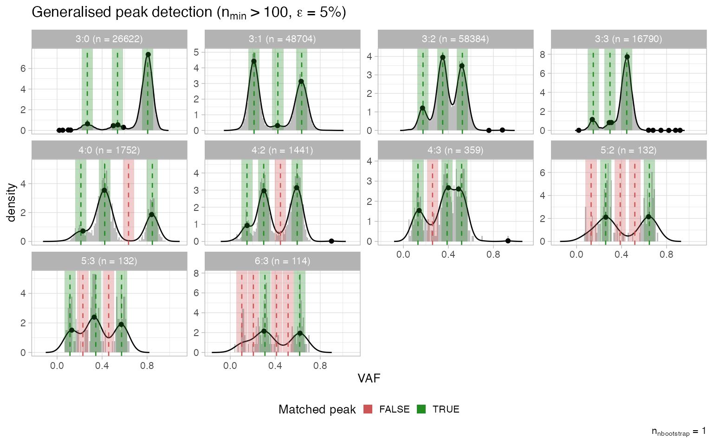
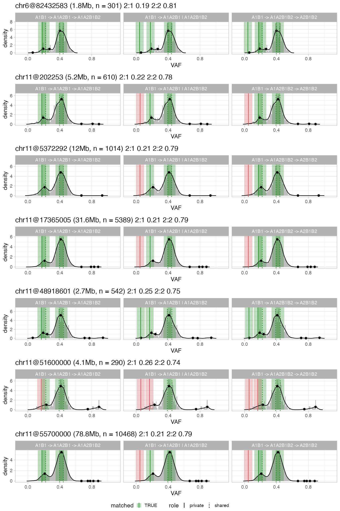
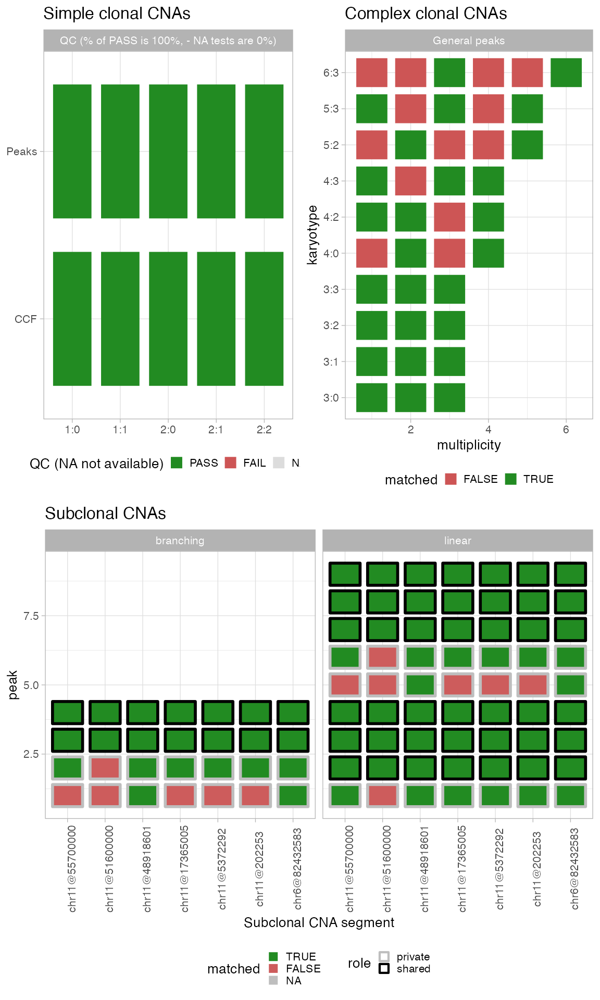

Peak analysis
CNAqc can perform quality control (QC) of somatic mutations, allele-specific CNAs and tumour purity. 3 distinct procedures are available, all called by function analyze_peaks. The idea is as follows: a CNA segment with \(m\)/ \(M\) copies of the minor/ major alleles is consistent with mutation data if VAFs peak at certain positions we can compute. CNAqc computes expected peaks, and compares them to the one it detects from data. The theory works for both clonal and subclonal segments, and a purity error parameter (purity_error) determines the maximum error we can tolerate before we fail a sample.
library(CNAqc)
#> Warning: replacing previous import 'cli::num_ansi_colors' by
#> 'crayon::num_ansi_colors' when loading 'BMix'
#> Warning: replacing previous import 'crayon::%+%' by 'ggplot2::%+%' when loading
#> 'BMix'
#> ✔ Loading BMix, 'Binomial and Beta-Binomial univariate mixtures'. Support : <https://caravagnalab.github.io/BMix/>
#> Warning: replacing previous import 'cli::num_ansi_colors' by
#> 'crayon::num_ansi_colors' when loading 'easypar'
#> ✔ Loading CNAqc, 'Copy Number Alteration quality check'. Support : <https://caravagn.github.io/CNAqc/>
# We work with the template dataset.
data('example_dataset_CNAqc', package = 'CNAqc')
x = CNAqc::init(
example_dataset_CNAqc$snvs,
example_dataset_CNAqc$cna,
example_dataset_CNAqc$purity,
ref = 'hg19')
#> [ CNAqc - CNA Quality Check ]
#>
#> ℹ Using reference genome coordinates for: hg19.
#> ℹ Drivers are annotated, but 'gene' column is missing, using mutation location.
#> ✔ Fortified calls for 12963 somatic mutations: 12963 SNVs (100%) and 0 indels.
#> ! CNAs have no CCF, assuming clonal CNAs (CCF = 1).
#> ✔ Fortified CNAs for 267 segments: 267 clonal and 0 subclonal.
#> ✔ 12963 mutations mapped to clonal CNAs.
x = CNAqc::example_PCAWG
print(x)
#> ── [ CNAqc ] 293736 mutations in 667 segments (654 clonal, 13 subclonal). Genom
#>
#> ── Clonal CNAs
#>
#> 2:1 [n = 88422, L = 692 Mb] ■■■■■■■■■■■■■■■■■■■■■■■■■■■
#> 3:2 [n = 58384, L = 417 Mb] ■■■■■■■■■■■■■■■■■■ { BRAF }
#> 3:1 [n = 48704, L = 380 Mb] ■■■■■■■■■■■■■■■
#> 3:0 [n = 26622, L = 360 Mb] ■■■■■■■■ { CDKN2A }
#> 2:2 [n = 25290, L = 253 Mb] ■■■■■■■■
#> 3:3 [n = 16790, L = 115 Mb] ■■■■■
#> 2:0 [n = 5374, L = 67 Mb] ■■
#> 4:0 [n = 1752, L = 22 Mb] ■ { TP53 }
#> 4:2 [n = 1441, L = 11 Mb]
#> 1:1 [n = 855, L = 9 Mb]
#>
#> ── Subclonal CNAs (showing up to 10 segments)
#>
#> chr11@55700000 [n = 10468, L = 78.75 Mb] 2:1 (0.21) 2:2 (0.79) ■■■■■■■■■■
#> chr11@17365005 [n = 5389, L = 31.55 Mb] 2:1 (0.21) 2:2 (0.79) ■■■■■
#> chr11@5372292 [n = 1014, L = 11.99 Mb] 2:1 (0.21) 2:2 (0.79)
#> chr11@202253 [n = 610, L = 5.17 Mb] 2:1 (0.22) 2:2 (0.78)
#> chr11@48918601 [n = 542, L = 2.68 Mb] 2:1 (0.25) 2:2 (0.75)
#> chr6@82432583 [n = 301, L = 1.81 Mb] 2:1 (0.19) 2:2 (0.81)
#> chr11@51600000 [n = 290, L = 4.1 Mb] 2:1 (0.26) 2:2 (0.74)
#> chr6@81896364 [n = 69, L = 0.54 Mb] 2:1 (0.19) 2:2 (0.81)
#> chr6@93956180 [n = 41, L = 0.11 Mb] 2:1 (0.2) 2:2 (0.8)
#> chr8@42633277 [n = 13, L = 0.26 Mb] 2:1 (0.28) 2:2 (0.72)
#> ℹ Sample Purity: 73.4% ~ Ploidy: 3.
#> ℹ There are 3 annotated driver(s) mapped to clonal CNAs.
#> chr from to ref alt DP NV VAF driver_label is_driver
#> chr17 7577082 7577082 C T 78 70 0.8974359 TP53 TRUE
#> chr7 140453136 140453136 A T 95 54 0.5684211 BRAF TRUE
#> chr9 21971120 21971120 G A 23 14 0.6086957 CDKN2A TRUE
#>
#> ── PASS Peaks QC closest: 100%, λ = -0.0104. Purity correction: -1%. ─────────
#> ℹ 1:1 ~ n = 855 (0.7%) → PASS -0.006
#> ℹ 2:0 ~ n = 5374 ( 4%) → PASS -0.003 PASS -0.002
#> ℹ 2:1 ~ n = 88422 ( 74%) → PASS -0.006 PASS -0.006
#> ℹ 2:2 ~ n = 25290 ( 21%) → PASS -0.053 PASS -0.004
#>
#> ── General peak QC (154052 mutations): PASS 21 FAIL 3 - epsilon = 0.03. ────
#> ℹ 3:0 ~ n = 26622 ( 17%) → PASS 3 FAIL 0
#> ℹ 3:1 ~ n = 48704 ( 32%) → PASS 3 FAIL 0
#> ℹ 3:2 ~ n = 58384 ( 38%) → PASS 3 FAIL 0
#> ℹ 3:3 ~ n = 16790 ( 11%) → PASS 3 FAIL 0
#> ℹ 4:0 ~ n = 1752 ( 1%) → PASS 3 FAIL 1
#> ℹ 4:2 ~ n = 1441 ( 1%) → PASS 3 FAIL 1
#> ℹ 4:3 ~ n = 359 ( 0%) → PASS 3 FAIL 1
#>
#> ── Subclonal peaks QC (7 segments, initial state 2:1): linear 3 branching 0 eith
#>
#> ── PASS Linear models
#> ℹ chr11@17365005 ~ (31.6Mb, n = 5389) 2:1 (21) + 2:2 (79) : A1A2B1 -> A1A2B1 -> A1A2B1B2 [100]
#> ℹ chr11@51600000 ~ (4.1Mb, n = 290) 2:1 (26) + 2:2 (74) : A1A2B1 -> A1A2B1 -> A1A2B1B2 [75]
#> ℹ chr11@5372292 ~ (12Mb, n = 1014) 2:1 (21) + 2:2 (79) : A1A2B1 -> A1A2B1 -> A1A2B1B2 [100]
#>
#> ── UNKNOWN Either branching or linear models
#> ℹ chr11@202253 ~ (5.2Mb, n = 610) 2:1 (22) + 2:2 (78) : A1A2B1 -> A1A2B1 -> A1A2B1B2 [100]; A1A2B1 -> A1A2B1 | A1A2B1B2 [100]; A1A2B1 -> A1A2B1B2 -> A2B1B2 [100]
#> ℹ chr11@48918601 ~ (2.7Mb, n = 542) 2:1 (25) + 2:2 (75) : A1A2B1 -> A1A2B1 -> A1A2B1B2 [100]; A1A2B1 -> A1A2B1 | A1A2B1B2 [100]; A1A2B1 -> A1A2B1B2 -> A2B1B2 [100]
#> ℹ chr11@55700000 ~ (78.8Mb, n = 10468) 2:1 (21) + 2:2 (79) : A1A2B1 -> A1A2B1 -> A1A2B1B2 [100]; A1A2B1 -> A1A2B1 | A1A2B1B2 [100]; A1A2B1 -> A1A2B1B2 -> A2B1B2 [100]
#> ℹ chr6@82432583 ~ (1.8Mb, n = 301) 2:1 (19) + 2:2 (81) : A1A2B1 -> A1A2B1 -> A1A2B1B2 [100]; A1A2B1 -> A1A2B1 | A1A2B1B2 [100]; A1A2B1 -> A1A2B1B2 -> A2B1B2 [100]
#> ✔ Cancer Cell Fraction (CCF) data available for karyotypes:1:0, 1:1, 2:0, 2:1, and 2:2.
#> ✔ PASS CCF via ENTROPY.
#> ✔ PASS CCF via ENTROPY.
#> ✔ PASS CCF via ENTROPY.
#> ✔ PASS CCF via ENTROPY.
#> ✔ PASS CCF via ENTROPY.We run it with default parameters, otherwise one can select only certain segments to fit or change purity error tolerance etc.
x = analyze_peaks(x)
#>
#> ── Peak analysis: simple CNAs ──────────────────────────────────────────────────
#> ℹ Analysing 120065 mutations mapping to karyotype(s) 2:1, 2:2, 2:0, 1:1, and 1:0.
#> ℹ Mixed type peak detection for karyotype 1:0 (124 mutations)
#> ℹ Mixed type peak detection for karyotype 1:1 (855 mutations)
#> ℹ Mixed type peak detection for karyotype 2:0 (5374 mutations)
#> ℹ Mixed type peak detection for karyotype 2:1 (88422 mutations)
#> ℹ Mixed type peak detection for karyotype 2:2 (25290 mutations)
#> # A tibble: 8 × 16
#> # Rowwise:
#> mutation_multiplicity karyotype peak delta_vaf x y counts_per_bin
#> <dbl> <chr> <dbl> <dbl> <dbl> <dbl> <int>
#> 1 1 2:1 0.268 0.0134 0.264 4.14 3138
#> 2 2 2:1 0.537 0.0268 0.54 3 2729
#> 3 1 2:2 0.212 0.00831 0.21 0.93 198
#> 4 2 2:2 0.423 0.0166 0.421 6.85 1732
#> 5 1 2:0 0.367 0.025 0.357 0.868 50
#> 6 2 2:0 0.734 0.05 0.735 5.43 265
#> 7 1 1:1 0.367 0.025 0.37 2.42 15
#> 8 1 1:0 0.580 0.0624 0.570 4.16 7
#> # … with 9 more variables: discarded <lgl>, from <chr>, offset_VAF <dbl>,
#> # offset <dbl>, weight <dbl>, epsilon <dbl>, VAF_tolerance <dbl>,
#> # matched <lgl>, QC <chr>
#> ✔ Peak detection PASS with r = 0.0124260485278245 - maximum purity error ε = 0.05.
#>
#> ── Peak analysis: complex CNAs ─────────────────────────────────────────────────
#> ℹ Karyotypes 3:2, 3:1, 3:0, 3:3, 4:0, 4:2, 4:3, 5:2, 5:3, and 6:3 with >100 mutation(s). Using epsilon = 0.05.
#> # A tibble: 10 × 5
#> # Groups: karyotype, matched [10]
#> karyotype n matched mismatched prop
#> <chr> <table> <int> <dbl> <dbl>
#> 1 3:0 26622 3 0 1
#> 2 3:1 48704 3 0 1
#> 3 3:2 58384 3 0 1
#> 4 3:3 16790 3 0 1
#> 5 4:2 1441 3 1 0.75
#> 6 4:3 359 3 1 0.75
#> 7 5:3 132 3 2 0.6
#> 8 4:0 1752 2 2 0.5
#> 9 5:2 132 2 3 0.4
#> 10 6:3 114 2 4 0.333
#>
#> ── Peak analysis: subclonal CNAs ───────────────────────────────────────────────
#> → Computing evolution models for subclonal CNAs - starting from 1:1
#> # A tibble: 11 × 6
#> segment_id model_id model prop size clones
#> <chr> <chr> <chr> <dbl> <chr> <chr>
#> 1 chr6@82432583 A1B1 -> A1A2B1 -> A1A2B1B2 linear 1 (1.8Mb, n =… 2:1 0…
#> 2 chr6@82432583 A1B1 -> A1A2B1 | A1A2B1B2 branching 1 (1.8Mb, n =… 2:1 0…
#> 3 chr6@82432583 A1B1 -> A1A2B1B2 -> A2B1B2 linear 1 (1.8Mb, n =… 2:1 0…
#> 4 chr11@202253 A1B1 -> A1A2B1 -> A1A2B1B2 linear 1 (5.2Mb, n =… 2:1 0…
#> 5 chr11@5372292 A1B1 -> A1A2B1 -> A1A2B1B2 linear 1 (12Mb, n = … 2:1 0…
#> 6 chr11@17365005 A1B1 -> A1A2B1 -> A1A2B1B2 linear 1 (31.6Mb, n … 2:1 0…
#> 7 chr11@48918601 A1B1 -> A1A2B1 -> A1A2B1B2 linear 1 (2.7Mb, n =… 2:1 0…
#> 8 chr11@48918601 A1B1 -> A1A2B1 | A1A2B1B2 branching 1 (2.7Mb, n =… 2:1 0…
#> 9 chr11@48918601 A1B1 -> A1A2B1B2 -> A2B1B2 linear 1 (2.7Mb, n =… 2:1 0…
#> 10 chr11@51600000 A1B1 -> A1A2B1 -> A1A2B1B2 linear 0.75 (4.1Mb, n =… 2:1 0…
#> 11 chr11@55700000 A1B1 -> A1A2B1 -> A1A2B1B2 linear 1 (78.8Mb, n … 2:1 0…An S3 methods print to screen all QC results based on peak-detection.
print(x)
#> ── [ CNAqc ] 293736 mutations in 667 segments (654 clonal, 13 subclonal). Genom
#>
#> ── Clonal CNAs
#>
#> 2:1 [n = 88422, L = 692 Mb] ■■■■■■■■■■■■■■■■■■■■■■■■■■■
#> 3:2 [n = 58384, L = 417 Mb] ■■■■■■■■■■■■■■■■■■ { BRAF }
#> 3:1 [n = 48704, L = 380 Mb] ■■■■■■■■■■■■■■■
#> 3:0 [n = 26622, L = 360 Mb] ■■■■■■■■ { CDKN2A }
#> 2:2 [n = 25290, L = 253 Mb] ■■■■■■■■
#> 3:3 [n = 16790, L = 115 Mb] ■■■■■
#> 2:0 [n = 5374, L = 67 Mb] ■■
#> 4:0 [n = 1752, L = 22 Mb] ■ { TP53 }
#> 4:2 [n = 1441, L = 11 Mb]
#> 1:1 [n = 855, L = 9 Mb]
#>
#> ── Subclonal CNAs (showing up to 10 segments)
#>
#> chr11@55700000 [n = 10468, L = 78.75 Mb] 2:1 (0.21) 2:2 (0.79) ■■■■■■■■■■
#> chr11@17365005 [n = 5389, L = 31.55 Mb] 2:1 (0.21) 2:2 (0.79) ■■■■■
#> chr11@5372292 [n = 1014, L = 11.99 Mb] 2:1 (0.21) 2:2 (0.79)
#> chr11@202253 [n = 610, L = 5.17 Mb] 2:1 (0.22) 2:2 (0.78)
#> chr11@48918601 [n = 542, L = 2.68 Mb] 2:1 (0.25) 2:2 (0.75)
#> chr6@82432583 [n = 301, L = 1.81 Mb] 2:1 (0.19) 2:2 (0.81)
#> chr11@51600000 [n = 290, L = 4.1 Mb] 2:1 (0.26) 2:2 (0.74)
#> chr6@81896364 [n = 69, L = 0.54 Mb] 2:1 (0.19) 2:2 (0.81)
#> chr6@93956180 [n = 41, L = 0.11 Mb] 2:1 (0.2) 2:2 (0.8)
#> chr8@42633277 [n = 13, L = 0.26 Mb] 2:1 (0.28) 2:2 (0.72)
#> ℹ Sample Purity: 73.4% ~ Ploidy: 3.
#> ℹ There are 3 annotated driver(s) mapped to clonal CNAs.
#> chr from to ref alt DP NV VAF driver_label is_driver
#> chr17 7577082 7577082 C T 78 70 0.8974359 TP53 TRUE
#> chr7 140453136 140453136 A T 95 54 0.5684211 BRAF TRUE
#> chr9 21971120 21971120 G A 23 14 0.6086957 CDKN2A TRUE
#>
#> ── PASS Peaks QC closest: 199%, λ = 0.0124. Purity correction: 1%. ───────────
#> ℹ 2:1 ~ n = 88422 ( 74%) → PASS 0.017 PASS -0.006
#> ℹ 2:2 ~ n = 25290 ( 21%) → PASS 0.01 PASS 0.007
#> ℹ 2:0 ~ n = 5374 ( 4%) → PASS 0.019 PASS -0.001
#> ℹ 1:1 ~ n = 855 (0.7%) → PASS -0.006
#> ℹ 1:0 ~ n = 124 (0.1%) → PASS 0.008
#>
#> ── General peak QC (154430 mutations): PASS 27 FAIL 13 - epsilon = 0.05. ───
#> ℹ 3:0 ~ n = 26622 ( 17%) → PASS 3 FAIL 0
#> ℹ 3:1 ~ n = 48704 ( 32%) → PASS 3 FAIL 0
#> ℹ 3:2 ~ n = 58384 ( 38%) → PASS 3 FAIL 0
#> ℹ 3:3 ~ n = 16790 ( 11%) → PASS 3 FAIL 0
#> ℹ 4:2 ~ n = 1441 ( 1%) → PASS 3 FAIL 1
#> ℹ 4:3 ~ n = 359 ( 0%) → PASS 3 FAIL 1
#> ℹ 5:3 ~ n = 132 ( 0%) → PASS 3 FAIL 2
#> ℹ 4:0 ~ n = 1752 ( 1%) → PASS 2 FAIL 2
#> ℹ 5:2 ~ n = 132 ( 0%) → PASS 2 FAIL 3
#> ℹ 6:3 ~ n = 114 ( 0%) → PASS 2 FAIL 4
#>
#> ── Subclonal peaks QC (7 segments, initial state 2:1): linear 5 branching 0 eith
#>
#> ── PASS Linear models
#> ℹ chr11@17365005 ~ (31.6Mb, n = 5389) 2:1 (21) + 2:2 (79) : A1B1 -> A1A2B1 -> A1A2B1B2 [100]
#> ℹ chr11@202253 ~ (5.2Mb, n = 610) 2:1 (22) + 2:2 (78) : A1B1 -> A1A2B1 -> A1A2B1B2 [100]
#> ℹ chr11@51600000 ~ (4.1Mb, n = 290) 2:1 (26) + 2:2 (74) : A1B1 -> A1A2B1 -> A1A2B1B2 [75]
#> ℹ chr11@5372292 ~ (12Mb, n = 1014) 2:1 (21) + 2:2 (79) : A1B1 -> A1A2B1 -> A1A2B1B2 [100]
#> ℹ chr11@55700000 ~ (78.8Mb, n = 10468) 2:1 (21) + 2:2 (79) : A1B1 -> A1A2B1 -> A1A2B1B2 [100]
#>
#> ── UNKNOWN Either branching or linear models
#> ℹ chr11@48918601 ~ (2.7Mb, n = 542) 2:1 (25) + 2:2 (75) : A1B1 -> A1A2B1 -> A1A2B1B2 [100]; A1B1 -> A1A2B1 | A1A2B1B2 [100]; A1B1 -> A1A2B1B2 -> A2B1B2 [100]
#> ℹ chr6@82432583 ~ (1.8Mb, n = 301) 2:1 (19) + 2:2 (81) : A1B1 -> A1A2B1 -> A1A2B1B2 [100]; A1B1 -> A1A2B1 | A1A2B1B2 [100]; A1B1 -> A1A2B1B2 -> A2B1B2 [100]
#> ✔ Cancer Cell Fraction (CCF) data available for karyotypes:1:0, 1:1, 2:0, 2:1, and 2:2.
#> ✔ PASS CCF via ENTROPY.
#> ✔ PASS CCF via ENTROPY.
#> ✔ PASS CCF via ENTROPY.
#> ✔ PASS CCF via ENTROPY.
#> ✔ PASS CCF via ENTROPY.Simple clonal CNAs
This QC is the most important as it can be used to detect adjustments required to better fit purity or ploidy of the sample (to re-run the copy number caller), or to select among alternative copy number solutions returned from a caller (tetraploid versus triploid).
For these segments the package computes a linear score from the distance between data peaks, and their theoretical expectation. The peaks are determined via:
a kernel-density (unitary adjustment, Gaussian kernel) used to smooth the data distribution, and the peakPick package to determine peaks in the smoothed density.
a Binomial mixture model using Bmix.
There are two possible algorithmic strategies to match peaks with clonal simple CNAs (configured by parameter matching_strategy): one matches the closest peaks as defined by euclidean distance, the other ranks peaks right to left, and prioritises right-most peaks (see the manual for more details). A call to plot_peaks_analysis with default parameters shows the results from peak detection.

Plots are ordered by fixed positions (gray panels represent karyotypes that have not been used). Each vertical dashed line is the expected peak, the bandwidth around being the tolerance we use to match peaks (based on purity_error, adjusted for segment ploidy and tumour purity). Each dot is a peak detected from data, with a bandwidth of tolerance (fixed) around it. The colours green/red reflect if a peak is matched or not; the overall QC status for a karyotype is given by the colour of the facet and the box surrounding the whole figure assembly reports the QC status for the sample.
Plots can also be generated without assembly or empty plots (see the parameters of function plot_peaks_analysis).
Complex clonal CNAs
The QC procedure for these CNAs uses only the kernel density estimation to make the computation faster.
plot_peaks_analysis(x, what = 'general') The plot reports dashed lines for expected peaks (for mutation with multiplicity from 1 to the maximum of the Major/minor allele counts), and dots for each data peak.The colours green/red report the QC status for each peak; with these CNAs no karyotype-level or sample-level scores are produced.
Subclonal CNAs
The QC procedure for these CNAs uses only the kernel density estimation (as for complex CNAs), and considers 2 subclones with distinct mixing proportions. Differently from clonal CNAs, however, here the analysis is carried out at the level of each segment (without pooling segments with the same karyotypes) so to support callers that report segment-specific CCF values (e.g., Battenberg).
plot_peaks_analysis(x, what = 'subclonal') The visual layout of this plot is the same of complex clonal CNAs; not that the facet reports the distinct evolutionary models that have been generated to QC subclonal CNAs.
The visual layout of this plot is the same of complex clonal CNAs; not that the facet reports the distinct evolutionary models that have been generated to QC subclonal CNAs.
Summary results
For every type of copy number analyzed several information are reported, tables with summary peaks are available inside x$peaks_analysis. More precisely
# Simple clonal CNAs
x$peaks_analysis$matches
#> # A tibble: 8 × 16
#> # Rowwise:
#> mutation_multiplicity karyotype peak delta_vaf x y counts_per_bin
#> <dbl> <chr> <dbl> <dbl> <dbl> <dbl> <int>
#> 1 1 2:1 0.268 0.0134 0.264 4.14 3138
#> 2 2 2:1 0.537 0.0268 0.54 3 2729
#> 3 1 2:2 0.212 0.00831 0.21 0.93 198
#> 4 2 2:2 0.423 0.0166 0.421 6.85 1732
#> 5 1 2:0 0.367 0.025 0.357 0.868 50
#> 6 2 2:0 0.734 0.05 0.735 5.43 265
#> 7 1 1:1 0.367 0.025 0.37 2.42 15
#> 8 1 1:0 0.580 0.0624 0.570 4.16 7
#> # … with 9 more variables: discarded <lgl>, from <chr>, offset_VAF <dbl>,
#> # offset <dbl>, weight <dbl>, epsilon <dbl>, VAF_tolerance <dbl>,
#> # matched <lgl>, QC <chr>
# Complex clonal CNAs
x$peaks_analysis$general$expected_peaks
#> # A tibble: 40 × 9
#> minor Major ploidy multiplicity purity peak karyotype matched n
#> <dbl> <dbl> <dbl> <int> <dbl> <dbl> <chr> <lgl> <table>
#> 1 2 4 6 1 0.734 0.149 4:2 TRUE 1441
#> 2 2 4 6 2 0.734 0.297 4:2 TRUE 1441
#> 3 2 4 6 3 0.734 0.446 4:2 FALSE 1441
#> 4 2 4 6 4 0.734 0.595 4:2 TRUE 1441
#> 5 2 5 7 1 0.734 0.129 5:2 FALSE 132
#> 6 2 5 7 2 0.734 0.259 5:2 TRUE 132
#> 7 2 5 7 3 0.734 0.388 5:2 FALSE 132
#> 8 2 5 7 4 0.734 0.518 5:2 FALSE 132
#> 9 2 5 7 5 0.734 0.647 5:2 TRUE 132
#> 10 0 4 4 1 0.734 0.212 4:0 FALSE 1752
#> # … with 30 more rows
# Subclonal CNAs
x$peaks_analysis$subclonal$expected_peaks
#> # A tibble: 91 × 16
#> mutation karyotype_1 genotype_1 karyotype_2 genotype_2 n.clone_1 n.clone_2
#> <chr> <chr> <chr> <chr> <chr> <int> <int>
#> 1 IUCWUUXI 2:1 A1A2B1 NA NA 1 0
#> 2 DUYCABEJ NA NA 2:2 A1A2B1B2 0 1
#> 3 POWQBZLD 2:1 A1A2B1 2:2 A1A2B1B2 1 2
#> 4 IZNWOVFT 2:1 A1A2B1 2:2 A1A2B1B2 2 2
#> 5 ACLNZMXI NA NA 2:2 A1A2B1B2 0 1
#> 6 EALJDVGN 2:1 A1A2B1 2:2 A1A2B1B2 1 1
#> 7 KRQJNBTG 2:1 A1A2B1 2:2 A1A2B1B2 1 2
#> 8 JZSDELYQ 2:1 A1A2B1 2:2 A1A2B1B2 2 2
#> 9 FGNNDPYN NA NA 2:1 A2B1B2 0 1
#> 10 RELPJLAE 2:2 A1A2B1B2 NA NA 1 0
#> # … with 81 more rows, and 9 more variables: peak <dbl>,
#> # genotype_initial <chr>, model <chr>, model_id <chr>, role <chr>,
#> # segment_id <chr>, matched <lgl>, size <chr>, clones <chr>The most helpful table is usually the one for simple clonal CNAs x$peaks_analysis$matches, which reports several information:
-
mutation_multiplicityandkaryotype, which are the number of copies of the mutation, and the segment’s karyotype. Each segment withdiscarded = FALSEhas been analysed; -
peak,x,yreport where the expected peak should be found, and where it has been found (xandy); -
offset,weightandscorethat report the factors of the finalscore; -
QCthat reports if the peak is considered matched.
The overall sample-level QC result - "PASS"/"FAIL" - is available in
x$peaks_analysis$QC
#> [1] "PASS"You can visually summarise QC results for all the analyses available in CNAqc (peaks-based and CCF-based).
plot_qc(x)